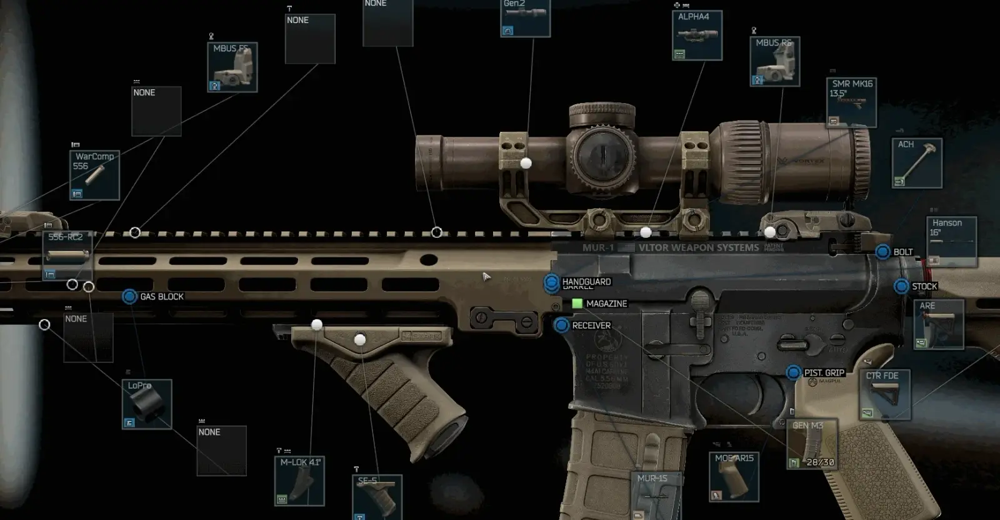

Weapon Customizer
- Downloads
- 113,150
- Favourites
- 124
- Mod lists
- 244
Weapon Customizer
This is my rifle. There are many like it, but this one is mine.
This mod allows you to adjust the positions of some of your weapon attachments. This is a purely aesthetic mod - it has no effect on weapon statistics.

How to use
Modify a gun with the context menu -> Modding screen, and you will be able to click and drag the white dot on each attachment. If it changes color, it’s adjustable. If not, it’s not.
Movement axis
By default, movement will be along the same axis as the gun - from the muzzle to the stock.
- SHIFT-drag will move the attachment up and down on the vertical axis.
- CTRL-drag will move the attachment to the left and right of the gun.
These secondary directions usually don’t make any sense but occasionally you may find an attachment that needs these adjustments.
Rotation
You can rotate attachments by holding ALT and dragging the dot to the left or right. Similar to movement, you can also hold down CTRL or SHIFT to rotate around different axes.
Resetting
You can reset an attachment to its default position by right clicking the dot, or reset all attachments by clicking “Revert” in the upper right corner.
In Raid
By default the modding screen is only available out of raid. In the F12 menu you may enable the option to show up in raid, and optionally require a multitool. Note that this is a stripped down version of the modding screen, and you can only use it to customize attachment positions, not swap out attachments [dev note - changing attachments caused a lot of issues].
No limits
Note that there is nothing currently enforcing the laws of physics - you can drag attachments into space, or inside of other attachments, and they will stay there. The only way to solve this would be an exhaustive list of every attachement’s dimensions (which wouldn’t support extra mod content), or a very complicated and likely wrong on-the-fly analysis of where items can be moved to. Use your own judgement.
Foregrips
You can adjust foregrips forward and backwards. The operator’s hand will stay on the grip. Note that rotation can easily cause extreme weirdness of the arm.
Tactical devices
Similarly, you can move lights and lasers and such. Moving them too far back will likely cause shadows!
Scopes and optics
Scopes can be moved, but be aware that when aiming, different scopes behave differently. Moving iron sights, reflex sights, etc., will affect how the scope appears and how it lines up. Sniper scopes are handled differently by the game, and will still fill the screen the same amount, regardless of position, unless you have Fontaine’s FOV Fix.
Strongly recommend Fontaine’s FOV Fix!
Stocks
Stocks are adjustable, but this will not affect how far off your chest the weapon is held.
Like almost every mod here, extract the zip archive into your SPT directory.
Recommend using 7zip to extract and install this mod.
Example (thanks DrakiaXYZ for the gif)

Uninstallation
To uninstall, simply delete Tyfon.WeaponCustomizer.dll from <your SPT folder>/BepInEx/plugins, and the Tyfon.WeaponCustomizer.Server folder from <your SPT folder>/SPT/user/mods
This mod can be uninstalled at any time without affecting your profile.
There are 3 settings available in the F12 menu:
-
Customize Weapons in Raid: Enable the Modding context menu in raid for unequipped weapons. Optionally require a multitool.
-
Step Size: Move attachments in discrete pixel amounts, if you prefer that
-
Move Everything: Allow every single gun part to be moveable, even when it makes no sense at all. Have fun
The customizations you make to your weapons are saved in:
SPT/user/mods/Tyfon.WeaponCustomizer.Server/customizations.json
It’s safe to delete this file if you want to discard all of your customizations. Do not edit it unless you are 100% sure of what you are doing.
Q: I made a change while testing in the hideout firing range, and it didn’t apply to the gun!
A: Put your weapon away and bring it back out. Sometimes the games caches the old model.
Q: I found a bug !
A: Open an issue or make a comment here. Please include logs if possible!
If you’d like to support my work, you can buy me a coffee ☕
Version
3.0.3
- Hide the transfer button during inapplicable states (constructing, upgrading, etc)
- Fixed errors stemming from other mods overwriting default json serialization
- Better error handling/logging
Version
3.0.2
Update client GUID to match server (no user facing changes)
Version
3.0.1
Fix returned insurance weapons losing their customization (thanks AcidPhantasm!)
Version
3.0.0
Updated for SPT 4.0
Version
2.0.1
- Fix non-fatal error that can occur on first launch
- In-raid modding menu is now only available on guns (ha)
- Disabling the “Move Everything” option now takes effect immediately, without a client restart
Version
2.0.0
Updated for SPT 3.11 🚀
Version
1.4.0
- Added rotation! Hold ALT while dragging the dots to rotate the attachment. Hold down SHIFT or CTRL as well to rotate on other axes. Some things to note:
- Which axis rotates is usually consistent but some mods are already rotated internally so the axis might not be what you expect
- Rotating foregrips will almost certainly cause weirdness with the character’s arm
- Special care will be required with sights and lasers to keep them lined up
- Updated customizations.json format, previous versions ARE compatible
- Try/catch calls to the server so failures are a bit more graceful
- Reverting many customizations at once are now batched into a single /weaponcustomizer/save call, avoiding race conditions
Note: This is the last version that works with SPT 3.10.x